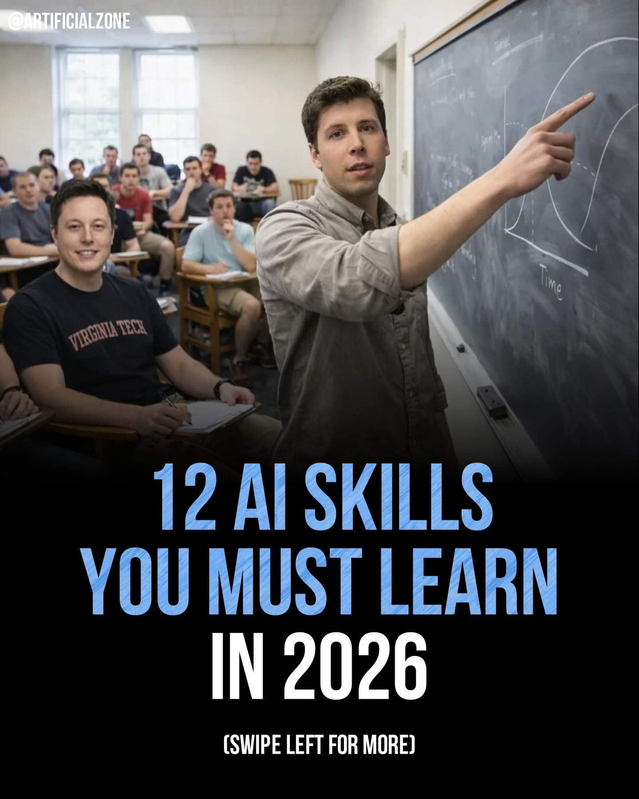
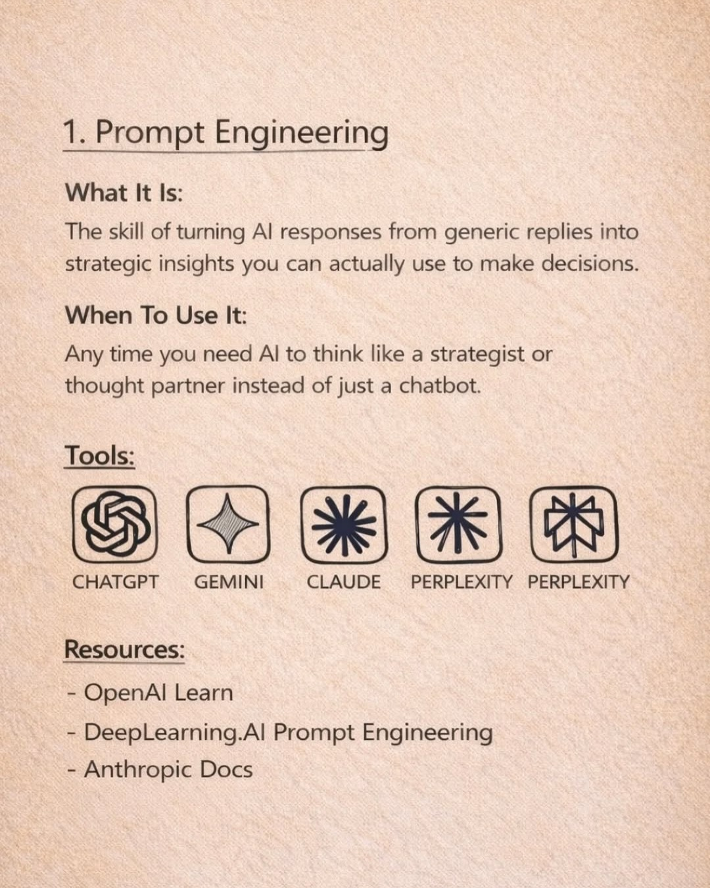
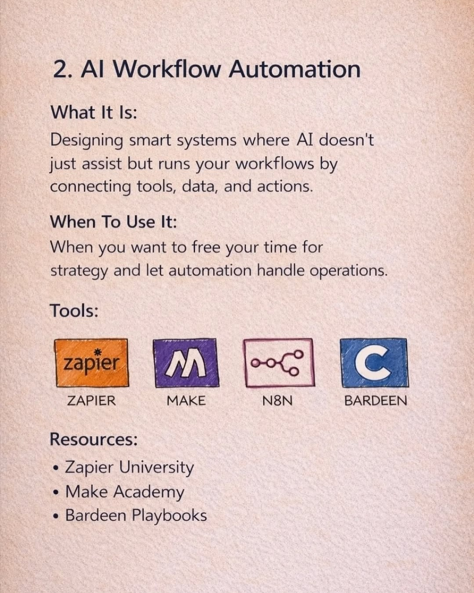
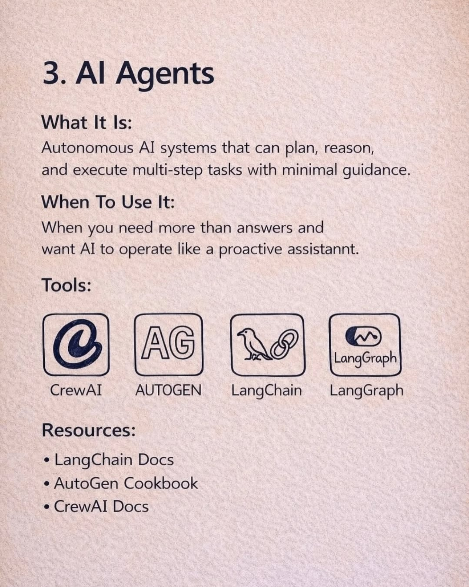
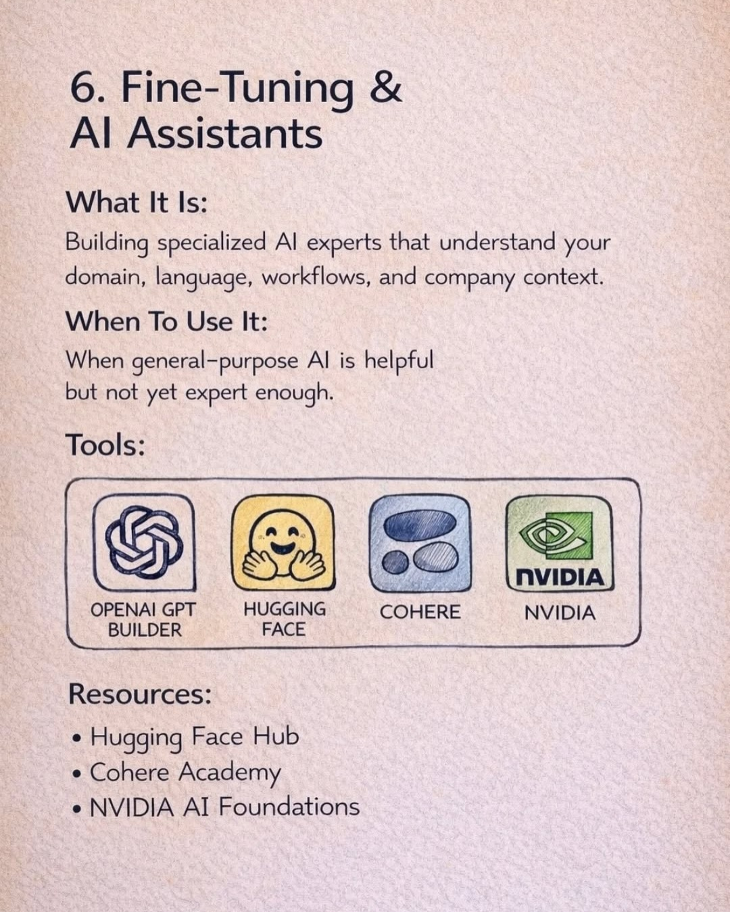
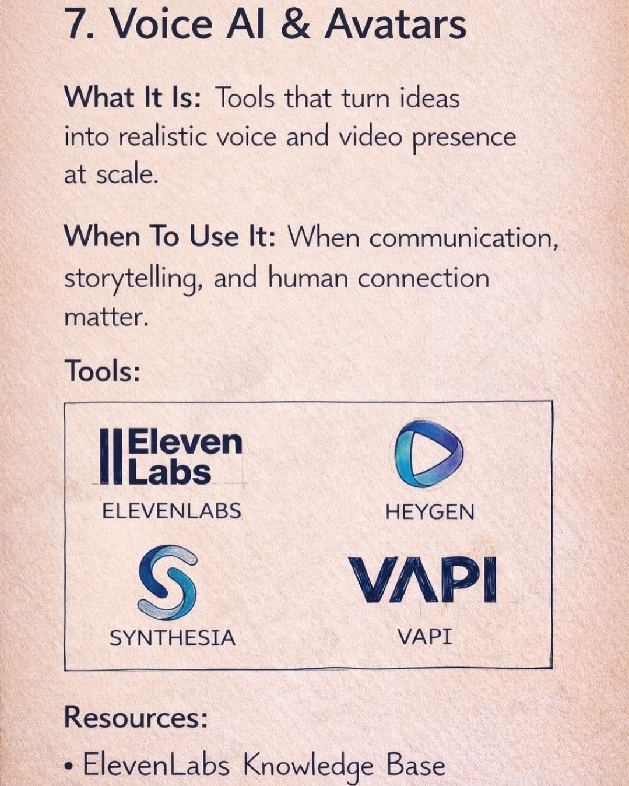
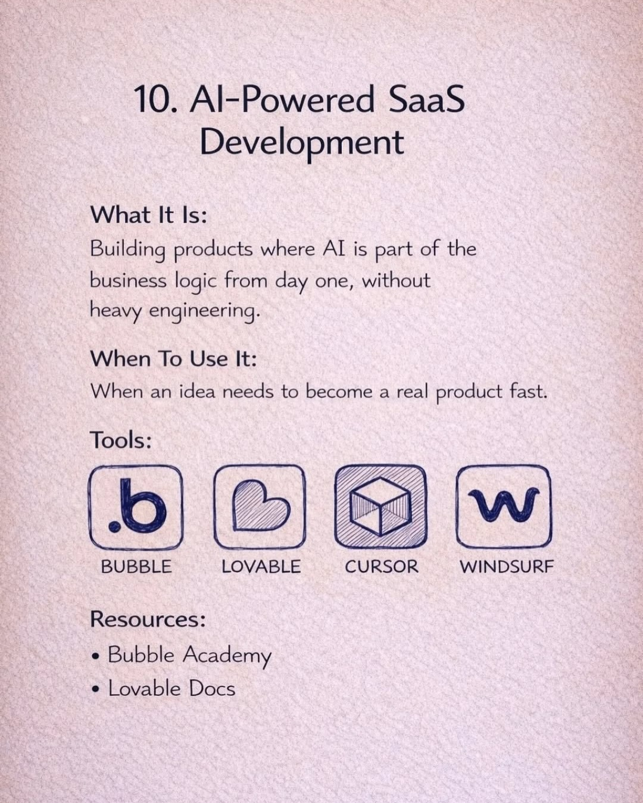

Instagram Post

VIRGINIA TECH Time
carousel (10 slides) (enriched by ClaudeClaw)
Summary
VIRGINIA TECH Time 12 AI SKILLS YOU MUST LEARN IN 2026 (S... | VIRGINIA TECH Time 12 AI SKILLS YOU MUST LEARN IN 2026 (S... | 1 | 2 | 3 | 6 | 6 | 6 | 7 | 10
1
@ARTIFICIALZONE VIRGINIA TECH Time 12 AI SKILLS YOU MUST LEARN IN 2026 (SWIPE LEFT FOR MORE)
A male instructor points at a blackboard with a graph in a classroom filled with male students, including Elon Musk, seated at desks.
2
@ARTIFICIALZONE VIRGINIA TECH Time 12 AI SKILLS YOU MUST LEARN IN 2026 (SWIPE LEFT FOR MORE)
A classroom scene shows a man resembling Elon Musk smiling while seated at a desk, and another man standing at a blackboard pointing at a graph, with other students visible in the background, overlaid with text about AI skills.
3
1. Prompt Engineering What It Is: The skill of turning AI responses from generic replies into strategic insights you can actually use to make decisions. When To Use It: Any time you need AI to think like a strategist or thought partner instead of just a chatbot. Tools: CHATGPT GEMINI CLAUDE PERPLEXITY PERPLEXITY Resources: - OpenAI Learn - DeepLearning.AI Prompt Engineering - Anthropic Docs
An infographic on a textured light brown background explains "Prompt Engineering" with definitions, use cases, tools (featuring logos for ChatGPT, Gemini, Claude, and Perplexity), and resources.
4
2. AI Workflow Automation What It Is: Designing smart systems where AI doesn't just assist but runs your workflows by connecting tools, data, and actions. When To Use It: When you want to free your time for strategy and let automation handle operations. Tools: zapier ZAPIER M MAKE N8N C BARDEEN Resources: • Zapier University • Make Academy • Bardeen Playbooks
The image displays a document or slide detailing "AI Workflow Automation," including its definition, use cases, a list of four tools with their logos (Zapier, Make, N8N, Bardeen), and three related resources.
5
3. AI Agents What It Is: Autonomous AI systems that can plan, reason, and execute multi-step tasks with minimal guidance. When To Use It: When you need more than answers and want AI to operate like a proactive assistannnt. Tools: @ CrewAI AG AUTOGEN LangChain LangGraph LangGraph Resources: • LangChain Docs • AutoGen Cookbook • CrewAI Docs
The image displays a document or slide with information about "AI Agents," including a definition, use cases, tools, and resources, presented on a textured light brown background.
6
6. Fine-Tuning & AI Assistants What It Is: Building specialized AI experts that understand your domain, language, workflows, and company context. When To Use It: When general-purpose AI is helpful but not yet expert enough. Tools: OPENAI GPT BUILDER HUGGING FACE COHERE NVIDIA NVIDIA Resources: • Hugging Face Hub • Cohere Academy • NVIDIA AI Foundations
A document or slide titled "6. Fine-Tuning & AI Assistants" provides definitions, use cases, and lists tools and resources for AI development, featuring logos for OpenAI, Hugging Face, Cohere, and NVIDIA.
7
6. Fine-Tuning & AI Assistants What It Is: Building specialized AI experts that understand your domain, language, workflows, and company context. When To Use It: When general-purpose AI is helpful but not yet expert enough. Tools: OPENAI GPT BUILDER HUGGING FACE COHERE NVIDIA NVIDIA Resources: • Hugging Face Hub • Cohere Academy • NVIDIA AI Foundations
An infographic slide titled "Fine-Tuning & AI Assistants" presents definitions, use cases, tools, and resources related to AI development.
8
6. Fine-Tuning & AI Assistants What It Is: Building specialized AI experts that understand your domain, language, workflows, and company context. When To Use It: When general-purpose AI is helpful but not yet expert enough. Tools: OPENAI GPT BUILDER HUGGING FACE COHERE NVIDIA NVIDIA Resources: • Hugging Face Hub • Cohere Academy • NVIDIA AI Foundations
A document or slide titled "6. Fine-Tuning & AI Assistants" provides definitions, use cases, and lists tools and resources for AI development, featuring logos for OpenAI, Hugging Face, Cohere, and NVIDIA.
9
7. Voice AI & Avatars What It Is: Tools that turn ideas into realistic voice and video presence at scale. When To Use It: When communication, storytelling, and human connection matter. Tools: ElevenLabs ELEVENLABS HEYGEN HEYGEN SYNTHESIA SYNTHESIA VAPI VAPI Resources: • ElevenLabs Knowledge Base
A document page outlines "Voice AI & Avatars," defining the concept, explaining its use cases, listing four specific tools with their logos, and providing a resource link.
10
10. AI-Powered SaaS Development What It Is: Building products where AI is part of the business logic from day one, without heavy engineering. When To Use It: When an idea needs to become a real product fast. Tools: BUBBLE LOVABLE CURSOR WINDSURF Resources: • Bubble Academy • Lovable Docs
An infographic on a textured light background lists information about "AI-Powered SaaS Development," including its definition, use cases, tools represented by icons, and resources.
All slides





